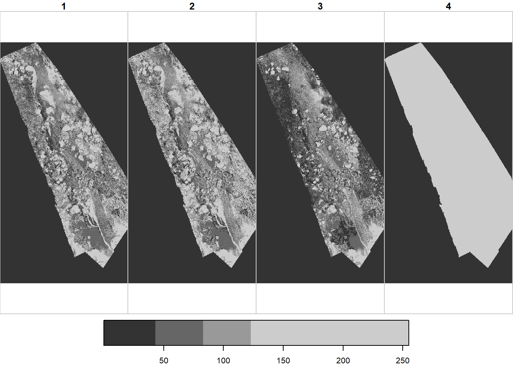
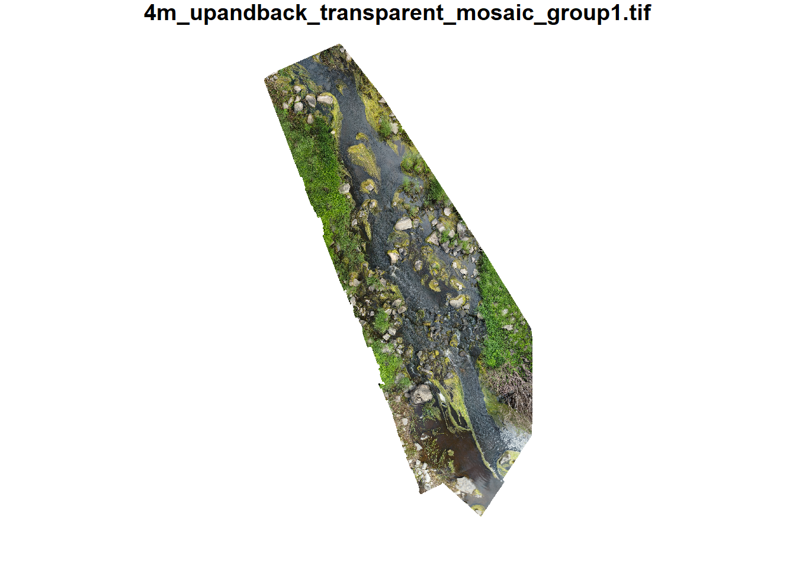
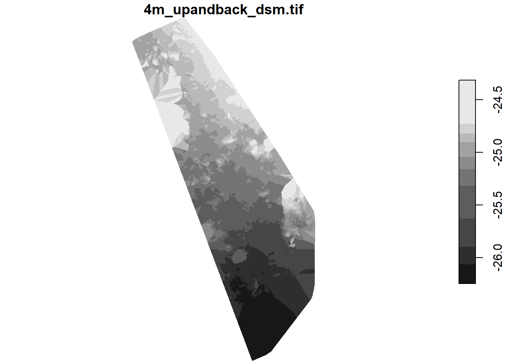
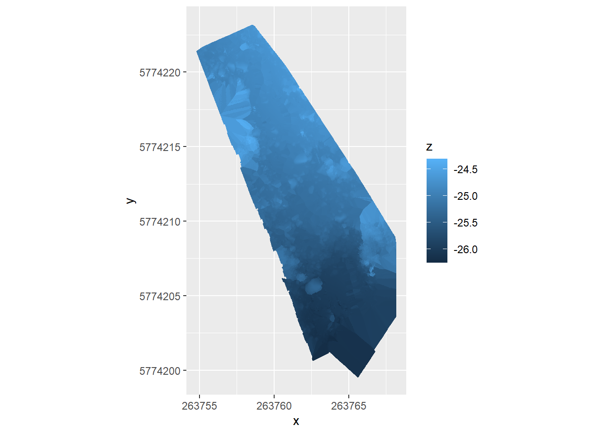
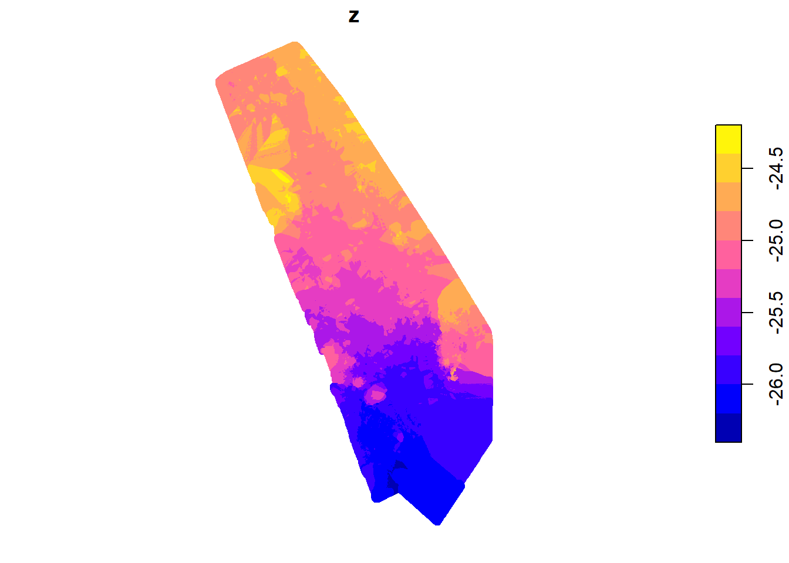
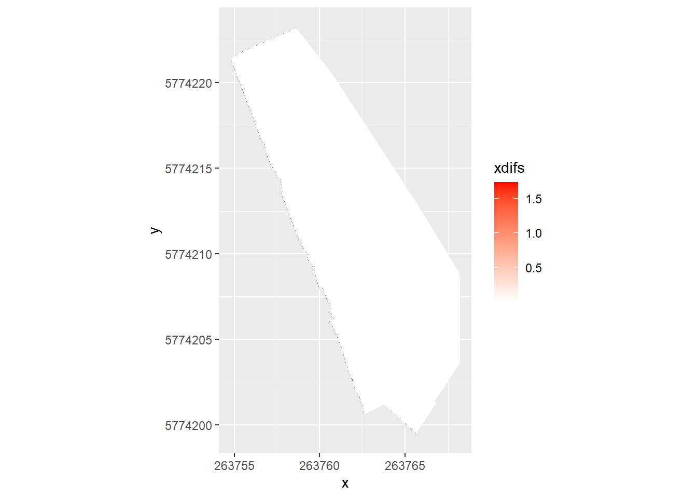
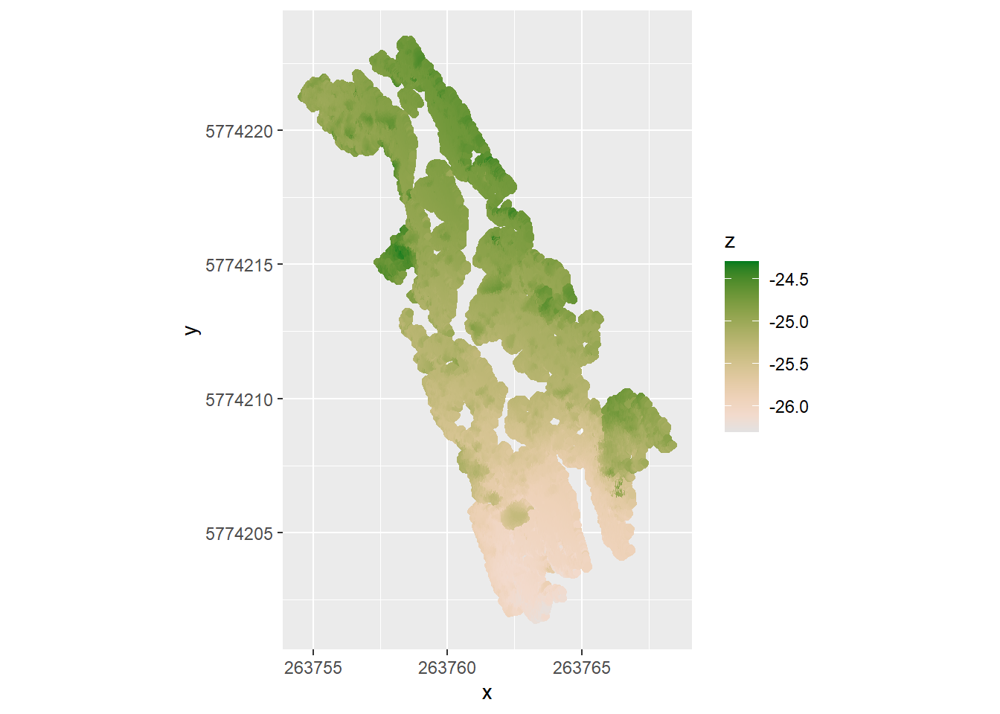
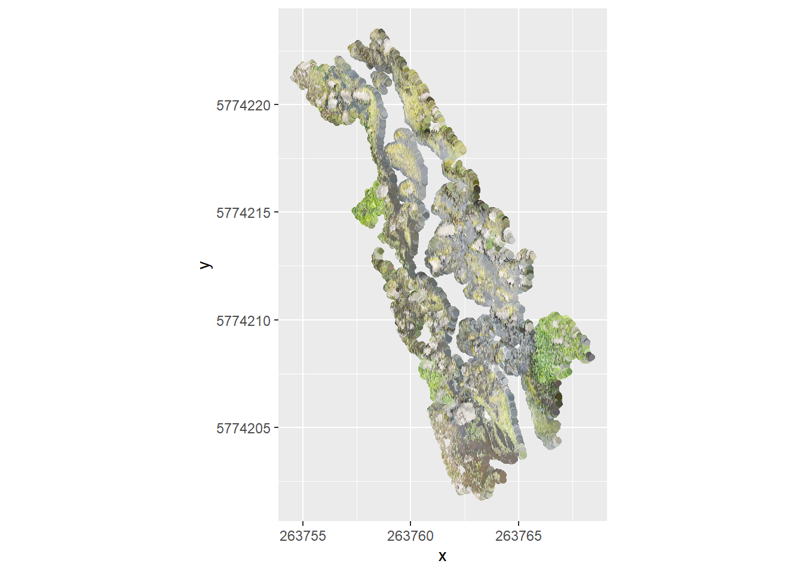

stars object with 3 dimensions and 1 attribute
attribute(s), summary of first 1e+05 cells:
Min. 1st Qu. Median Mean 3rd Qu. Max.
4m_upandback_transparent_mosai... 0 0 0 3.11974 0 234
dimension(s):
from to offset delta refsys point x/y
x 1 2416 263755 0.00556 WGS 84 / UTM zone 55S FALSE [x]
y 1 4546 5774223 -0.00556 WGS 84 / UTM zone 55S FALSE [y]
band 1 4 NA NA NA NA
4 bands. What are they? I expected rgb, and the 4th is uniform. Seems to be alpha, based on some searching.
useRaster = TRUE works here. BUt not in quarto? that’s weird. Set to false so it renders.
plot(ortho, useRaster =FALSE)
downsample set to 4

Color?
colmos <-st_rgb(ortho)
colmos
stars object with 2 dimensions and 1 attribute
attribute(s), summary of first 1e+05 cells:
4m_upandback_transparent_mosai...
Length:100000
Class :character
Mode :character
dimension(s):
from to offset delta refsys point x/y
x 1 2416 263755 0.00556 WGS 84 / UTM zone 55S FALSE [x]
y 1 4546 5774223 -0.00556 WGS 84 / UTM zone 55S FALSE [y]
plot(colmos)
downsample set to 1

Wow. That just worked. 4th band is likely alpha values.
DSM
Raster DSM
The settings for this seem to be in the DSM and orthomosaic tab and resolution matches the ortho, as far as I can tell.
stars object with 2 dimensions and 1 attribute
attribute(s), summary of first 1e+05 cells:
Min. 1st Qu. Median Mean 3rd Qu.
4m_upandback_dsm.tif -24.73554 -24.70843 -24.68753 -24.68809 -24.67387
Max. NA's
4m_upandback_dsm.tif -24.62663 96962
dimension(s):
from to offset delta refsys point x/y
x 1 2416 263755 0.00556 WGS 84 / UTM zone 55S FALSE [x]
y 1 4546 5774223 -0.00556 WGS 84 / UTM zone 55S FALSE [y]
Really not super clear why useRaster = TRUE isn’t working for these, but whatever.
plot(dsm_r, useRaster =FALSE)
downsample set to 1

Those are funny z-values. What is the reference- clearly not elevation.
How many pixels? 1.0983136^{7}. 11 million is a lot.
Grid DSM
This is an xyz point file.The settings are in the Additional Outputs tab, and we can set the grid spacing there. This was done with a spacing of 100cm. That implies these are centers, and this is a much coarser grid than in the dsm raster, which is at GSD scale.
Rows: 1490037 Columns: 6
── Column specification ────────────────────────────────────────────────────────
Delimiter: ","
dbl (6): x, y, z, r, g, b
ℹ Use `spec()` to retrieve the full column specification for this data.
ℹ Specify the column types or set `show_col_types = FALSE` to quiet this message.
Ignore spatial for a minute, can I just slam it in ggplot? using z as fill first. If we want the rgb, it’ll either be an orthomosiac or we’ll need to do something 3d with color overlay
dsm_xyzgg <-ggplot(dsm_xyz, aes(x = x, y = y, fill = z)) +geom_raster() +coord_equal()dsm_xyzgg

That was really weirdly fast.
Can I use the rgb to see the orthomosiac?
dsm_xyzorthogg <-ggplot(dsm_xyz, aes(x = x, y = y, fill = hexcol)) +geom_raster() +coord_equal() +scale_fill_identity()dsm_xyzorthogg
Would be cool to do a 3d map with color, maybe {rayshader}? Would really be nice to be able to rotate it etc.
That has color and height- might be good to feed to a ML algorithm to ID rocks using both sets of info and their relationships to each other.
This is supposedly a 100cm grid, but it has 1.5 million pixels, which is a lot less than the dsm raster at GSD resolution, but is nowhere near the difference I’d expect. It’s approximately 10x less, but GSD is < 1cm. And even at 1cm, I’d expect 10,000x fewer pixels. And those pictures are clearly not 1m pixels. What IS the spacing? Iterates fastest on x
dsm_xyz[2, 'x'] - dsm_xyz[1, 'x']
x
1 0.01
# dsm_xyz[2, 'y'] - dsm_xyz[1, 'y']
So, what is 0.01? That’s a cm, isn’t it?
Assuming the same crs as the raster dsm, the LENGTHUNIT is 1 meter. So, 0.01 would be 1cm, and that makes more sense.
st_crs(dsm_r)
Coordinate Reference System:
User input: WGS 84 / UTM zone 55S
wkt:
PROJCRS["WGS 84 / UTM zone 55S",
BASEGEOGCRS["WGS 84",
DATUM["World Geodetic System 1984",
ELLIPSOID["WGS 84",6378137,298.257223563,
LENGTHUNIT["metre",1]]],
PRIMEM["Greenwich",0,
ANGLEUNIT["degree",0.0174532925199433]],
ID["EPSG",4326]],
CONVERSION["UTM zone 55S",
METHOD["Transverse Mercator",
ID["EPSG",9807]],
PARAMETER["Latitude of natural origin",0,
ANGLEUNIT["degree",0.0174532925199433],
ID["EPSG",8801]],
PARAMETER["Longitude of natural origin",147,
ANGLEUNIT["degree",0.0174532925199433],
ID["EPSG",8802]],
PARAMETER["Scale factor at natural origin",0.9996,
SCALEUNIT["unity",1],
ID["EPSG",8805]],
PARAMETER["False easting",500000,
LENGTHUNIT["metre",1],
ID["EPSG",8806]],
PARAMETER["False northing",10000000,
LENGTHUNIT["metre",1],
ID["EPSG",8807]]],
CS[Cartesian,2],
AXIS["(E)",east,
ORDER[1],
LENGTHUNIT["metre",1]],
AXIS["(N)",north,
ORDER[2],
LENGTHUNIT["metre",1]],
USAGE[
SCOPE["Engineering survey, topographic mapping."],
AREA["Between 144°E and 150°E, southern hemisphere between 80°S and equator, onshore and offshore. Australia. Papua New Guinea."],
BBOX[-80,144,0,150]],
ID["EPSG",32755]]
It’s not exactly a translation from the raster, because the raster has all the NA off the edges, and a step of
diff(st_get_dimension_values(dsm_r, 'x')[1:2])
[1] 0.00556
So, the raster should have about 4x, but also includes the NAs.
sum(is.na(dsm_r[[1]]))
[1] 5896746
That’s not entirely it. Still about 266k more pixels in the rnn than expected once we drop the NA and adjust by pixel size.
#non-na in rasterrnn <- (2416*4546)-sum(is.na(dsm_r[[1]]))#pixel difference- how many dsm_r pixels per dsm_xyz pixels?pixdif <- (0.01/diff(st_get_dimension_values(dsm_r, 'x')[1:2]))^2expected_rnn <-nrow(dsm_xyz)*pixdifexpected_rnn-rnn
[1] -266385.2
Make geographic
sf
Can I make it geographic (sf)? Assume the same crs as the dsm_r
use the sf plot method? bad idea. takes forever. The points (next) are points, but it might make more sense to make these stars anyway- it is gridded.
plot(dsm_xyzsf[,'z'])

stars
Try stars- first, confirm it is gridded- what’s the step?
Need to do a bit of cleanup- the x’s have negatives when they turnover y’s, and the y’s have a ton of zeros because they iterate slower.
rawx <-diff(pull(dsm_xyz[, 'x']))cleanx <- rawx[rawx >0]# rounding errordifclean <-abs(cleanx-cleanx[1])# huh- some are still out. by a lot. It seems systematic and strangeall(difclean <1e-8)
The steps are where there are weird things happening along angled edges.
dsm_xyz_x <-ggplot(dsm_xyz, aes(x = x, y = y, fill = xdifs)) +geom_raster() +coord_equal() +scale_fill_gradient(low ='white', high ='red')dsm_xyz_x

Can we see it better with size?
dsm_xyz_xp <-ggplot(dsm_xyz, aes(x = x, y = y, color = xdifs, size = xdifs)) +geom_point() +coord_equal() +scale_color_gradient(low ='white', high ='red')dsm_xyz_xp
dsm_xyz_yp <-ggplot(dsm_xyz, aes(x = x, y = y, color = ydifs, size = ydifs)) +geom_point() +coord_equal() +scale_color_gradient(low ='white', high ='red')dsm_xyz_yp
What about geom_sf on the point version? I plotted it above, but haven’t tried ggplot. This is more specifically what the point cloud is, below. Change everything to color from fill.
pc <- readr::read_csv(file.path(pcpath, paste0(projname,'_group1_densified_point_cloud.xyz')),col_names =c('x', 'y', 'z', 'r', 'g', 'b'))
Rows: 645290 Columns: 6
── Column specification ────────────────────────────────────────────────────────
Delimiter: ","
dbl (6): x, y, z, r, g, b
ℹ Use `spec()` to retrieve the full column specification for this data.
ℹ Specify the column types or set `show_col_types = FALSE` to quiet this message.
pc <- pc %>%mutate(hexcol =rgb2hex(r,g,b))
Like the dsm_xyz, I should be able to use ggplot directly. But here, the points are the points in the cloud, not the evenly spaced points of the dsm_xyz. So geom_raster doesn’t work. Could use geom_tile I guess, but it’s more appropriate to just use geom_point.
pcgg <-ggplot(pc, aes(x = x, y = y, color = z)) +geom_point() +coord_equal() + colorspace::scale_color_continuous_sequential(palette ='Terrain 2')pcgg

And the rgb for the ortho
pcorthogg <-ggplot(pc, aes(x = x, y = y, color = hexcol)) +geom_point() +coord_equal() +scale_color_identity()pcorthogg

We can make that an sf. Doesn’t make sense to make it a stars, since it’s points and not gridded. The dsm_xyz is technically points, but they’re gridded so can go either way.
Ok, that all works. Need to clean it up and make a simple package.
Sizes and matching
Do the pixels line up between the various outputs? The dsm_xyz is points, each with x,y,z,r,g,b, so that will just match. But they aren’t technically a raster. The ortho, raster dsm, and dtm are rasters, but it’s not clear their pixels match. So, let’s do some investigation and possibly re-processing if necessary.
Check pixels dsm & ortho
st_dimensions(dsm_r)
from to offset delta refsys point x/y
x 1 2416 263755 0.00556 WGS 84 / UTM zone 55S FALSE [x]
y 1 4546 5774223 -0.00556 WGS 84 / UTM zone 55S FALSE [y]
st_dimensions(ortho)
from to offset delta refsys point x/y
x 1 2416 263755 0.00556 WGS 84 / UTM zone 55S FALSE [x]
y 1 4546 5774223 -0.00556 WGS 84 / UTM zone 55S FALSE [y]
band 1 4 NA NA NA NA
Can we combine those into one stars? the catch is that the rgb vals aren’t on the same scale as the z. For the ortho, we have a pixel value for each of 4 bands (r,g,b, alpha). But z isn’t a band. So how would we do it? Make the bands attributes, probably. Or just call z a band?
To make the bands attributes and add z, this works. Will need to better define what’s needed later before deciding whether to then merge this back or what. And maybe we should be using hex (e.g. merging colmos and dsm_r).
Merging into a dim- takes a while. and it’s unclear what to call this dimension or its values- ‘band’ isn’t right, and the values aren’t 0-255 for the z. I think don’t do this unless we’re really sure we want to.
orthodsm_dim <- orthodsm |>merge()
Does it actually make more sense to add a z dimension? Maybe? we can’t just merge the dsm_r, because then it has no attributes. Can we control the merge above? Maybe, but it’ll be a bit tricky. ignore until we have a clearer definition of what we need. The few obvious things I’ve tried have failed.
Whatever we do about the combination, the pixels match for the DSM raster and the orthophoto
Check pixels dtm & ortho
These are unlikely to match-the dtm’s settings are done elsewhere and unless we were really particular to set them the same as the ortho, (which would require downgrading the ortho), they won’t match. AND, it’s unnecessary, since there’s a raster dsm that does match.
Looking at the from-to, they clearly don’t match, and looking at dimensions confirms it
st_dimensions(ortho)
from to offset delta refsys point x/y
x 1 2416 263755 0.00556 WGS 84 / UTM zone 55S FALSE [x]
y 1 4546 5774223 -0.00556 WGS 84 / UTM zone 55S FALSE [y]
band 1 4 NA NA NA NA
st_dimensions(dtm)
from to offset delta refsys point x/y
x 1 1932 263755 0.00695 WGS 84 / UTM zone 55S FALSE [x]
y 1 3636 5774223 -0.00695 WGS 84 / UTM zone 55S FALSE [y]
But, the DTM is some sort of smoothed thing, and is set in the Additional Outputs tab. We could make the ortho matched, but it’d be contrived (and pointless, given the existence of the raster dsm.
Convert dsm_xyz to image with z?
Again, I don’t really see the point of this turning the dsm_xyz into an image (raster) is already done in the raster dsm + ortho. We can merge if we want. Just not sure exactly how we’d want to present that.
To do
make a package. Have funs for xyz and funs for tifs. But call those within specific funs for each output (e.g. dsm_xyz and point cloud should have their own funs, and the dsm_xyz should allow returning a raster in addition to points, but pc shouldn’t). Similar for a standard set of plot returns
Can I get rayshader to work?
Would be cool to do height with z and color with hexcol to actually map the stream in 3d with photo overlay. Pix4d does it, but would be nice to do here too.
Why does the point cloud not include the water?
Does that make our lives easier in some ways?
Where is this stuff in space? is it in the right place?